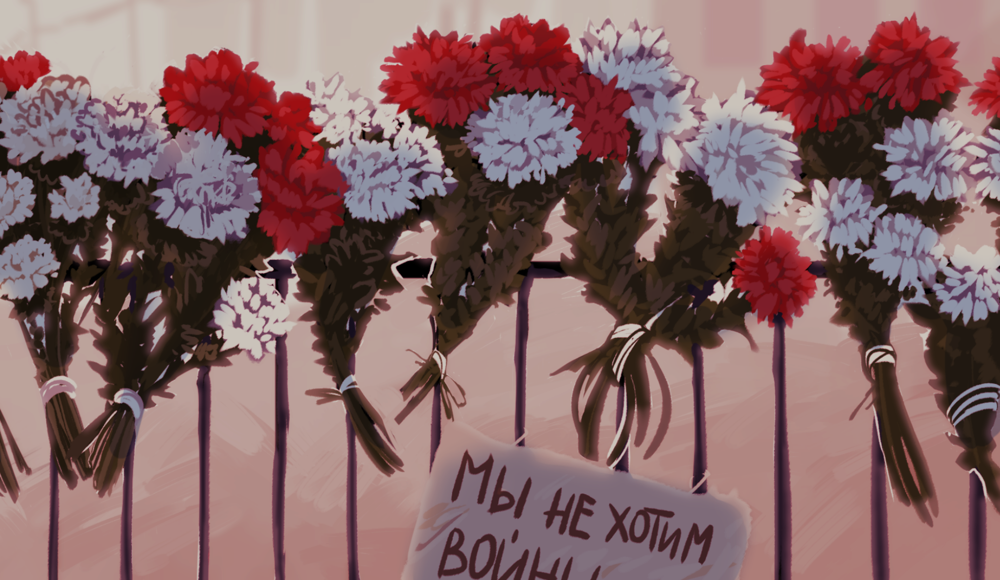

Новые сообщения
сегодня

Подробнее
В твоем онлайне ничего не поменялось. Как и пять минут до этого. Как и час до этого. Да, я не спал, если что, просто смотрел на твою страницу. Пусто.
Днем батя включил телевизор. Я не выдержал и вырубил его из розетки. Влетело по первое число. Не могу больше смотреть новости. Замьютил теги. Думаю удалить твиттер.
За вчера я выдумал сто двадцать вариантов того, что могло с тобой произойти, и обдумал столько же вещей, которые так и не сказал тебе. А что если я их никогда не скажу? Твою мать.
Целый день срачи в любой комнате квартиры на тему того, кто там что думает про политику, и я не понимаю, о какой политике может вообще идти речь, если ты не выходишь в сеть. Такое ощущение, будто я жалуюсь на свою тяжелую жизнь, блять, нет, я пытаюсь заполнить пустоту чем-нибудь, чтобы не думать о том, что там с тобой.
Пока пишу всё это, захотелось снова полистать что-нибудь в интернете. Запретил себе это делать. Я больше не верю в то, что ты просто обиделась. Просто боюсь, что ты никогда не ответишь.
Судорожно пытался прокрутить все наши диалоги в голове. Вдруг на самом деле я про тебя ничего не знаю, вдруг ты вообще в числе первых вышла на площади? Я вчера так спокойно отмахнулся, мол, ты вроде не активный участник, а что если активный, что это поменяет, ну, кроме того, что я еблан тупой и никогда про это не спрашивал?
Тебя же нет здесь.
На секунду понадеялся, как услышал, что у вас пытались вырубить интернет. Надежда рухнула, когда увидел, как люди пользуются впн. Не верю, что ты не догадалась, хотя очень хотелось бы.
Скоро рассвет. Может, стоит написать твоим родителям? Я даже не знаю, где им писать. Или как их искать. Друзьям? Перебрать общих знакомых? Почему я раньше этого не сделал? Почему я пишу об этом тебе сейчас?
Вчера я сказал, что если ты издеваешься, я приеду с тобой драться, сегодня готов отправить себе все свои деньги, лишь бы это оказался какой-то всратый прикол.
Ладно. Попробую постучаться к кому-нибудь. Прости за это заранее.